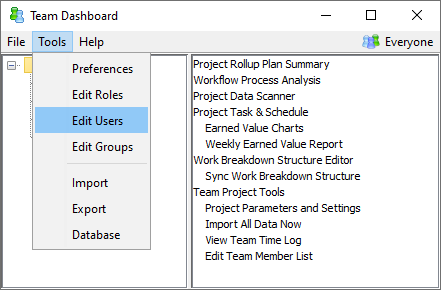

The reports and tools in the Team Dashboard are designed to support self-directed teams, and to strike a balance between openness and data privacy. For many teams, the default settings work very well. But when projects become larger, and when you are required to share data with people outside the team, you may find it useful to control who can see and edit certain types of data. The Team Dashboard includes a role-based access framework for this purpose.
Roles represent a set of responsibilities and permissions that can be granted to individuals. To edit roles, choose "Edit Roles" from the "Tools" menu on the main Team Dashboard window.
This will open a window for editing roles:
Roles can be added, duplicated, renamed, and deleted using the buttons above the list.
With a role highlighted, you can add and delete permissions for the role using the buttons on the right. Clicking the Add button displays a list of available permissions:

Permissions are hierarchical. When you select a permission to add, its children are given a light blue highlight as a visual clue that they will be implicitly granted too. If desired, you can select "All Dashboard Permissions" to grant all permissions to a coach, team lead, or other role.
Most permissions are either granted or not; but some permissions have extra parameters. If you add a parameterizable permission, you will see an extra prompt to configure the value of the parameter:

After adding one of these parameterizable permissions, you can change the value of the parameter by highlighting it in the roles window and clicking the Edit button.
If you have been editing a role and you make a mistake, you can click the Revert button. This replaces the list of permissions for this role with the values that were in place before you opened the Roles Editor.
When you are finished with your edits, you can save them by clicking OK. If you click Cancel, your edits will be discarded.
After roles have been defined, you can assign these roles to users by choosing "Edit Users" from the Team Dashboard "Tools" menu.

This opens a window for editing the list of users:

This window provides elements to search for users, to toggle the display of inactive users, to add and delete users, and to view/edit a table of details for each user. Clicking OK saves your changes, clicking Cancel discards them.
The "Active?" column determines whether an individual will be allowed to open the Team Dashboard. Removing the checkmark will disallow the given user from opening the Team Dashboard.
The Roles column in the table allows you to choose the roles that should be assigned to a user. A given user can have more than one role; just separate the role names with commas. Users will receive all of the permissions of all the roles they have been granted. Is is also permissable not to assign any role at all, which would leave a user with the most limited privileges possible.
The table header for the Roles column includes a "help" icon. If you click this icon, a role definition report will be displayed in your web browser. This report displays all of the roles that have been defined, along with the permissions they contain; this can be helpful for deciding which roles a given user should be granted.
The first row of the table sets permissions for people whose usernames are not explicitly listed. Clearing the "Active" checkmark will prevent unlisted people from opening this Team Dashboard. Leaving the row "Active" and assigning zero or more roles will allow unlisted people to open this Team Dashboard, but be constrained by the permissions of the associated roles.
When you highlight a particular user, you can click the "View" button to see the effective list of permissions that user has been granted, as a result of their assigned role or roles:

Permission grants are enforced equally when someone opens a Team Dashboard data backup in the Quick Launcher. As a result, you can prevent unlisted people from opening your team's data backups, or you can control the types of data they are able to see. This means that you should consider external people (like remote coaches) when you are listing users and configuring permissions.
If you make changes that affect your own permissions in the WBS Editor, these permissions will not take effect until you close and reopen the WBS Editor.
For most Team-Dashboard-related permissions, you can make a change to users/roles and see the change right away. The exceptions are the permissions for editing users and roles. If you make a change that would remove your own ability to edit users/roles, the change will not be applied until you close and reopen the Team Dashboard. This gives you a "grace period" to recover from mistakes. If you do edit away your ability to change users/roles, a warning will be displayed:

Many of the available permissions control whether a person is allowed to do something, or whether they are allowed to edit a particular type of data. But another class of permissions relates to data privacy.
Data privacy is an extremely important consideration for TSP teams, because the data that individuals collect is very sensitive. The data provides excellent opportunities for project management and process improvement, but can be dangerous if misused.
The following drivers underscore the need for effective data privacy:
The desires of the individual - the individuals who are collecting and sharing their data have specific expectations about who will be allowed see it, and how it will be used. To the greatest extent possible, we strive to honor these expectations. We also strive to provide transparency to users about who can see their data, to inspire trust.
Laws and regulations - data privacy laws govern the use of data collected by individuals in the EU.
Customer/stakeholder business relations - certain metrics are sensitive and should not be seen by a customer or stakeholder, as this could damage the business relationship. For example, awareness of detailed cost/productivity data could lead a customer to demand smaller profit margins on future contracts. For external customers, this risk can be managed via selective release of status data to customers; but when the customer/stakeholder happens to be within the same organization as the team doing the work, data privacy controls come into play.
Protection from mismanagement - certain metrics are especially prone to improper use by management:
If personal metrics are ever used as a basis for reward or punishment, individuals will change their behavior and begin collecting metrics that make them look good. When this occurs, the metrics are no longer useful for reward/punishment; but they also cease to be useful for project management or process improvement. A single occurrence of this problem within an organization is enough to damage trust and destroy a process improvement initiative. Organizations can mitigate this risk with continual management education and diligence; but not all organizations are successful, and cultural differences make this a huge problem in certain parts of the world.
Of course, data privacy needs must be balanced with a set of competing needs for openness:
There are a number of ways we can meet these needs; but to the greatest extent possible, we strive to meet them with the smallest data privacy exposure.
The following broad categories of data deserve separate analysis:
| My Personal Data | Another Individual's Personal Data | Rollups for a User Group | Team Rollups |
My Personal Data is always available to an individual within their personal Process Dashboard.
Team Rollups are always available in the Team Dashboard, to anyone who has been granted Team Dashboard access.
Rollups for a User Group are available in the Team Dashboard, subject to a set of data privacy controls that prevent generating a report of data for a single individual.
Another Individual's Personal Data is the sphere of primary importance for data privacy. Personal data is currently available in the Team Dashboard via the following mechanisms:
To meet the needs described above, the dashboard provides a number of permissions allowing you to control whether an individual can see certain types of (potentially sensitive) data. The items in the "View Personal Data" portion of the permissions tree all fall into this category.
When you grant these permissions to a role, you can grant the permission for "Everyone," or for a particular user group:
If you wish to grant permission to view data in several different groups, you can add the permission more than once, and select a different group each time.
The default configuration of the Team Dashboard grants "All Permissions" to "All Users." This means that no special data privacy constraints are enforced by default. This is often appropriate for many teams, because the built-in reports are already designed to limit the exposure of personal data. But if your team determines that additional protection is warranted, data privacy permissions can be selectively granted to those users who have a "need to know."